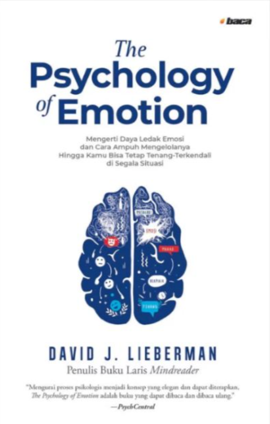
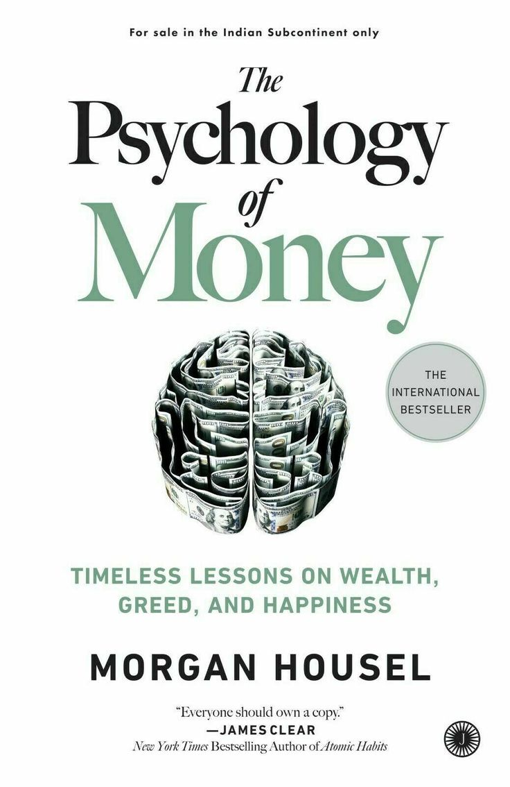

The Psychology Of Emotion
Rp135.000
Buku The Psychology of Emotion karya David J. Lieberman merupakan buku pengembangan diri dan psikologi populer yang membahas secara mendalam tentang emosi manusia. Buku ini membantu pembaca memahami bagaimana emosi seperti marah, stres, dan frustrasi muncul, serta apa yang sebenarnya terjadi dalam diri kita saat mengalaminya. Melalui penjelasan yang sederhana dan aplikatif, buku ini memberikan strategi efektif untuk mengendalikan emosi, meredam ledakan perasaan, dan tetap tenang serta rasional dalam berbagai situasi. Cocok bagi siapa saja yang ingin meningkatkan kecerdasan emosional, kualitas hubungan, dan ketenangan diri dalam kehidupan sehari-hari.

The Psychology Of Money
Rp135.000
Buku The Psychology of Money karya Morgan Housel membahas hubungan manusia dengan uang dari sudut pandang psikologi dan perilaku. Buku ini menjelaskan bahwa kesuksesan finansial tidak hanya ditentukan oleh kecerdasan atau pengetahuan, tetapi lebih banyak dipengaruhi oleh cara berpikir, kebiasaan, dan pengambilan keputusan. Melalui cerita-cerita sederhana dan relevan, pembaca diajak memahami konsep tentang kekayaan, keserakahan, risiko, dan kebahagiaan, serta bagaimana membuat keputusan keuangan yang lebih bijak dalam jangka panjang. Buku ini cocok bagi siapa saja yang ingin membangun pola pikir sehat tentang uang dan mencapai kestabilan finansial.

Emotional Intelligence
Rp115.000
Buku Emotional Intelligence oleh Daniel Goleman mengajarkan bahwa kecerdasan emosional (EQ) — kemampuan mengenali, memahami, dan mengatur emosi diri sendiri dan orang lain — bisa sama pentingnya bahkan lebih dari IQ dalam menentukan keberhasilan, hubungan, dan kesejahteraan hidup. Goleman menjelaskan konsep-konsep seperti kesadaran diri, kontrol emosi, empati, dan keterampilan sosial dengan cara yang mudah dipahami, serta menunjukkan bagaimana EQ dapat dikembangkan untuk meningkatkan kualitas hidup secara keseluruhan.